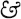
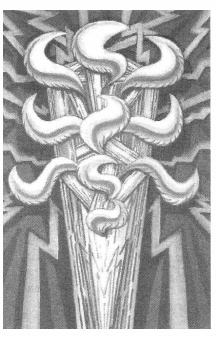
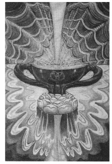
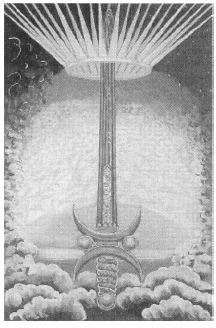
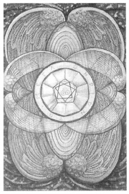

CHAPTER SEVENTEEN
THE FOUR ACES
Do try

answer me about the Aces. I feel broody about them. I keep on thinking about those 4 elements their mightiness I feel drowned in water; burnt with fire, cut by the air dug into the earth. The air feels to be the most solid dead of them all, which is odd, as it is supposed to be so light. No blood I suppose.188—Harris to Crowley, date uncertain.
ACE OF WANDS

With the Princess of Wands as its throne, the Ace of Wands rules the Cancer-Leo-Virgo Quadrant above the North Pole, and the area of Asia.
Original Title: The Root of the Powers of Fire.
Golden Dawn Model: A hand appears from clouds at the bottom of the card holding a three-branched flaming club. Three flames issue from the ends of the right and left branch, and four flames from the top central branch. The whole is surrounded by twenty-two red flames or Yods arranged as to suggest the paths on the Tree of Life.
Color: Brilliance.
This card represents the essence of the element of Fire it its inception. It is a solar-phallic outburst of flame from which spring lightnings in every direction.189
If that was how Crowley described his vision of this card to Harris, then we will have to admit that she did a magnificent job. The Golden Dawn model is more complex than its description might suggest. Some renditions I've seen are almost comical in their attempt to fulfill all the required images. Harris throws them all out the window and gives us the image of a huge Tree of Life ablaze with ten flaming sephiroth.
In a very real way, this image is telling us that, just as all the sephiroth of all four Trees of Life are only aspects of the one supreme Kether, just as all four Qabalistic worlds are really only aspects of the highest world, just as the He and the Vau and the final He of YHVH are really only aspects of the Yod, all the cards of the Minor Arcana ultimately live inside one card, the Ace of Wands.
Of course, it takes a Buddha to actually grasp that concept. It also leaves us with a pretty thin deck of tarot cards to play with. It's probably better for us to go along with the Qabalistic drill and view this card as representing Kether, of the Tree of Life that represents the highest of the Qabalistic worlds, Atziluth. That's a heavy enough concept as it is.
This card is the masculine compliment of the Ace of Cups and is derived from the Lingam and the Sun exactly as the Ace of Cups is from the Yoni and the Moon.190
ACE OF CUPS

With the Princess of Cups as its throne, the Ace of Cups rules the Libra-Scorpio-Sagittarius quadrant above the North Pole, and the area of the Pacific.
Original Title: The Root of the Powers of the Waters.
Golden Dawn Model: A hand appears from clouds at the bottom of the card supporting on its palm the cup of the Stolistes from which gush fountains of water. The Hebrew letter He is formed by the spray of the fountain. The water falls on all sides into a calm sea where lotuses and lilies grow.
Color: White Brilliance.
This card represents the element of Water in its most secret and original form. It is the feminine complement of the Ace of Wands, and is derived from the Yoni and the Moon exactly as that is from the Lingam and the Sun.191
This card is a stunning and vivid image of the cosmic Yoni. In Wagnerian terms, it is the Holy Grail to the Ace of Wands' sacred lance. The Golden Dawn model has more or less been discarded, and Crowley's description in The Book of Thoth is that of an earlier draft of this card, not Harris's finished product. This is, nonetheless, one of, if not the, most beautiful cards in the entire deck.
Scalloped radiations of light burst from the cup to meet and match the undulating waves of water at the horizon of the sea. Harris repeats the motif of scallops in the dress of the Princess of Cups, suggesting perhaps her relationship as throne of the ace.
The cup itself is a simple blue bowl with what appear to be two blue-green entwined serpents serving as handles. For reasons that are not altogether clear to me, Harris has placed three interlaced rings (the same as those that crowned the Hierophant's wand in Atu V) on the front of the cup. This symbol, which Crowley described as “representative of the three Aeons of lsis, Osiris and Horus with their interlocking magical formulae”192 is not to be confused with the more complex Mark of the Beast, which we find on the Ace of Disks and the Prince and Five of Wands. One can only speculate why Harris was moved to apply this symbol to the cup.
ACE OF SWORDS

With the Princess of Swords as its throne, the Ace of Swords rules the Capricorn-Aquarius-Pisces quadrant above the North Pole and the area of the Americas.
Original Title: The Root of the Powers of the Air.
Golden Dawn Model: A hand appears from clouds at the bottom of the card holding the hilt of a great sword that penetrates at its point a radiant crown. An olive branch hangs from the right of the crown, a palm branch from the left. Six Hebrew Vaus fall from the sword point upon the top of the crown.
Color: White Brilliance.
The Ace of Swords is the primordial Energy of Air, the Essence of the Vau of the Tetragrammaton, the integration of the Ruach.193
The Ace of Swords is the root of the element air and represents the Ruach. Ruach is the intellect part of the soul, and (according to Eastern mystics) the mind is the great enemy. The mind violently resists identification with any higher levels of consciousness. Consequently, from out of the mind springs conflict, frustration, anxiety, worry, and sorrow. Is it any wonder the suit of Swords is filled with so many unpleasant cards? However, in the proper hands, the sword can be the weapon that cuts through the crap, and the Ace of Swords is the sword of the Magus, “crowned with the 22 rayed diadem of pure Light.”194 In Magick, Liber ABA, Book Four, Crowley describes the sword. I can offer no better description of this card.
The hilt of the Sword should be made of copper. The guard is composed of the two crescents of the waxing and the waning Moon-back to back. Spheres are placed between them, forming an equilateral triangle with the sphere of the pommel. The blade is straight, pointed, and sharp right up to the guard. It is made of steel to equilibrate with the hilt, for steel is the metal of Mars, as copper is of Venus…The hilt is Venus, for Love is the motive of this ruthless analysis-if this were not so the Sword would be a Black Magical weapon. The pommel of the Sword is in Daäth, the guard extends to Chesed and Geburah; the point is in Malkuth.195
Upon the blade, Harris has engraved, in Greek, the word Thelema (Will) in Arabic Damascened work.
ACE OF DISKS

With the Princess of Disks as its throne, the Ace of Disks rules the Aries-Taurus-Gemini quadrant above the North Pole, and the area of Europe and Mrica.
Original Title: The Root of the Powers of the Earth.
Golden Dawn Model: A hand appears from clouds at the bottom of the card holding the branch of a rose tree surmounted by a large disk composed of five concentric circles. The center is white, is adorned with a red Greek cross, and radiates twelve white rays that reach to the inner edge of the disk. Above this is a circled Maltese Cross with two white wings.
Color: White, flecked Gold.
Steal not this Book for fear of shame!
The Ace of Disks—the Author's name.196
To represent the root of the element earth and the material world Assiah, Lady Harris gives us the ultimate coin of the realm centered upon money-green layers of the vegetal embellishments that historically have adorned the world's paper currency.
A tarot tradition dating back to sixteenth-century Italy (where decks of cards were stamped and taxed by local authorities) dictates that the creator of the deck place his or her mark or signature on the Two or the Ace of Disks. Crowley was obviously aware of this tradition, and I think we can be confident that he supervised its execution very carefully. The Ace of Disks is nothing less than Crowley's own magical signature. His motto, TO META HEPION To Mega Therion, Greek for the Great Beast, is displayed on the perimeter of the disk, and his personal seal is placed in the very center of all.
A decagon fits snugly within the outer ring and seems to create ten facets that reach toward the center and curiously end at the points of two five-sided polygons. Within the two polygons is a heptagram (Thelema's Star of Babalon), and within the heptagram we find the Mark of the Beast.
The Mark of the Beast is made up of three intersecting circles. The uppermost circle contains a dot at its center, creating the astrological symbol of the Sun. Cradling the Sun circle from below is an upturned crescent Moon. Together, they are the Sun and Moon conjoined, the symbol of so many things that I would be an idiot to even start a footnote. The number 666, the number of the Sun and of the Beast is written across the two lower circles. This symbol is rich in magical and Qabalistic symbolism. One can also, with very little imagination, see a bird's-eye view of the three main characters of male genitalia. Perfect Crowley!